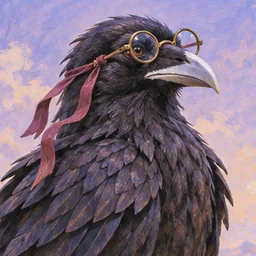
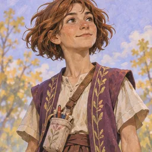
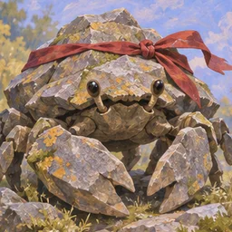

Книга ведущего · Фэнтези, полевые приключения и самостоятельные магические спутники · 12+ · 3–8 игроков + ведущий
Школа перепутанных фамильяров
В Школе Второго Крыла разумный спутник сам выбирает, с кем идти в поле. Но однажды заяц-наставник Крен объявляет все магические отклики между партнёрами зависимостью и ставит поперёк троп размыкающие ворота. Он намерен провести через них даже несогласные пары. Из безопасной школы вы отправляетесь в вылазки: перехватить давление, открыть обход, освободить задержанного и вместе с неожиданными спутниками сорвать конкретную операцию Крена.
Иллюстрация к первой встрече
Если партия изменила план
Перед чтением вступления сверьте место героев, присутствующих людей и предметы с итогом прошлого вечера. Если условия встречи отпали, сыграйте последствия там, где находится партия. Событие по расписанию может произойти за кадром. Герои узнают о нём от тех, кто был на месте.
Вечер 7. Если лагерь предупреждён раньше, чем ожидал Крен
Назовите пары, которые успели выбрать обход, и тех, кто ещё перед створкой. За каждой оставьте её прежнее решение. В последнем вечере разыграйте спор лишь там, где Крен ещё способен кого-либо задержать.
Группа отказалась от задания
Участников в поход не собираем. Останемся у выхода для тех, кто хочет отказаться. Организуем место для желающих уйти через двор. На этой стороне ворот никто не обязан выступать. Школа отвечает за тех, кто уже ушёл за тент.
Игроки раскрыли тайну раньше
Сверим полевой маршрут с приказом задерживать отказавшихся; зададим Крену прямой вопрос при двух свидетелях. Доступные свидетельства — Маршрут с единственным разрешённым выходом, Приказ задерживать отказавшихся. Крен приказал удержать отказавшихся у рамы. Право отказаться требует открытого обхода. Перед обеими сторонами читаем приказ о закрытии обхода. Публикуем условия принудительного разрыва и оставляем свободный проход. Решение каждой пары принимается отдельно.
Партия уступила поле
Стойки оттеснили нас от выхода, часть участников уже по другую сторону. Собираем учеников у открытой дороги вместо новой попытки силой. Передаём волю оставшихся через ворота и ищем наружную створку. Если связь разорвана, отмечаем потерю и не восстанавливаем её приказом.
Карман ведущего
Для игры без подготовки: что говорят люди, места в стороне от главной дороги и прохожие. Пометки о правде слухов — только для ведущего; сказанное за столом становится фактом мира, лишь когда вы его подтвердите.
Слухи
«Крен свой отклик давно разорвал — и ничего, с Немой до сих пор дружат. Сам говорит: ни о чём не жалею».
Правда. Правда: Крен прекратил прежнюю связь без наказания и сохранил дружбу с Немой; это написано и на его табличке. Слух объясняет, во что он верит, но не оправдывает решения за другие пары.
«Белый шов память стирает. Пройдёшь через раму — и забудешь, с кем ходил в поле».
Неправда. Страх у ворот. Рама прекращает только магический канал: память, дружба, способности и личность остаются. Поправить слух может Мара, показав пустую раму, или сам Крен.
«К раме лучше и близко не подходить: говорят, она рвёт отклик шагов за десять».
Отчасти правда. Осторожность разумна, но рама действует лишь при полном проходе через замкнутый шов и ничего не делает издалека, голосом или взглядом. Раскрытая петля гасит шов.
«Хорошую тропу у нас узнают по месту, где разойдутся двое. Так их и прокладывают, ещё с пастушьих времён».
Правда. Старое правило Косой долины из описания мест. Им удобно напомнить о главном: обход, на котором расходятся пары, ценнее короткого прохода через раму.
«Крылатый пёс человека на спине унесёт, если хорошенько попросить. На то ему и крылья».
Неправда. Заблуждение: Лоск отказывается носить людей и предпочитает идти пешком рядом с Ивеном (вечер 4). Крылья не обязывают его летать, а его отказ не делает задачу тупиком.
«Каменного краба Крена ни словом, ни ломом с тропы не сдвинешь. Сторож он злой и упрямый».
Отчасти правда. Круча открыто поддерживает блокаду и стережёт короткую тропу. Но он не злой: увидев работающий обход и не будучи вынужден объявлять себя неправым, он готов отпустить задержанных (вечер 5).
«Ода с Гулкой поляны никого из лагеря без записи не выпустит — ни человека, ни колышка».
Правда. Правда: Ода ведёт честный список поклажи и следит за маршрутом возвращения (вечер 7). Её правило — сначала люди и спутники, потом вещи.
«Саламандру долго в руках не держи — рукав загорится».
Неправда. Суеверие. Свет Рубы ничего не поджигает и не даёт огненных атак. К тому же Руба не любит, когда её носят: она хочет ходить и лазать сама.
«Лисица с расселины — подручная Крена. Это она указатели развешивала».
Отчасти правда. Шелла и правда ставила указатели добровольного выхода, но соглашалась только при свободном обходе и не знает о приказе задерживать отказавшихся (вечера 3 и 6). В принуждении она не участвует.
«Ворона Нема на незнакомую тропу всегда первой летит. Пересказов не любит — всё сама глядит».
Правда. Правда: Нема самостоятельная полеведка и в третьем вечере сама проверяет, что делают посты. Слух подсказывает, что её можно найти в Белой норе, но ничего нового не раскрывает.
«Козья тропа на Щетинистом склоне старше школы. По ней пастухи стада на летние выпасы гоняли».
Правда. Местная история, которую Руба повторяет во втором вечере. Нижняя тропа — настоящий обход ограды, по ней всегда носили тяжёлые вещи.
Места в стороне
Пастуший брод
Мелкое место на ручье под Тремя уступами, где из воды торчат плоские камни, как ступени. По обычаю долины первый перешедший ждёт на том берегу второго и подаёт ему руку или лапу на последнем камне. Вода здесь ледяная даже летом, а над ней дрожат стрекозы. На прибрежной иве висят забытые ленты: ими ученики когда-то отмечали брод в половодье.
Сушильня тентов
Длинный навес за учебными корпусами, где после дождливых выходов сушат парусину. Полотна свисают с жердей до самой земли, и между ними легко спрятаться; младшие ученики так и делают, когда не хотят на урок узлов. Под навесом тянет мокрой тканью и дёгтем. На столбе висит дощечка, где каждый, кто порвал тент, сам пишет своё имя.
Жучиный дуб
Старый кряжистый дуб у края школьного сада. В начале лета к нему слетаются жуки величиной с котелок и гудят так, что слышно на чердаке. Ученики ведут счёт жукам прямо на коре, мелкими зарубками, и спорят, чей год был жучистее. Ветки трясти не принято: жук, упавший на голову, — неприятное знакомство для обоих.
Колодец с двумя вёдрами
Колодец на заднем дворе школы, где на одной цепи висят два ведра. Пока одно поднимаешь для себя, второе опускается для следующего, и оставить колодец с пустым верхним ведром считается дурным тоном. Сруб исписан отметками лап и инициалами. Здесь ученики договариваются о парах для выхода, потому что у колодца всегда кто-нибудь стоит.
Смотровая сосна
Высокая сосна на краю Гулкой поляны, к стволу которой прибиты перекладины. С верхней площадки дежурные лагеря видят и тропу, и школу, а в тумане перекликаются оттуда с лагерем: эхо поляны разносит голос далеко. Кора внизу изрезана именами тех, кто впервые поднялся наверх сам. Подниматься разрешено только со страховкой — это правило никто не оспаривает.
Стрекозиная заводь
Тихая заводь ниже Висячей расселины, заросшая осокой. Здесь выводятся стрекозы размером с весло, и в безветренный день над водой стоит сухой шелест их крыльев. Ловить их сачками в школе запрещено с давних пор, а смотреть можно сколько угодно. В воде отражаются серебристые стволы с края расселины, и кажется, будто там растёт второй лес.
Прохожие
Дед Аким
Бывший полевой наставник с костяной трубкой без табака; сидит у ворот школы и строгает из ивы свистульки.
«Двое на тропе — не толпа. Двое на тропе — это хорошая тропа».
Может рассказать: Помнит, что три полосы круглых камней на Щетинистом склоне выложили первые наставники школы, чтобы ученики учились выбирать путь.
Повариха Луша
Пухлая женщина в огромном переднике, с половником за поясом, как с мечом.
«Кто в поле — тому двойная горбушка. Кто в поле с другом — тому тройная».
Может рассказать: Утром собрала полевым участникам еды на один день: все записанные в плане собирались вернуться к вечеру через террасу Раздвоенной скалы.
Первогодок Савушка
Вихрастый мальчишка лет двенадцати с ведром воды, которое он носит двумя руками и всё равно расплёскивает.
«А правда, что шов у рамы горячий? Нет? А светится тогда зачем?»
Может рассказать: Сегодня утром впервые сам подписался на доске добровольных пар и видел, что Мара и Нема подписались вместе, она чернилами, ворона отпечатком лапы.
Возница Прохор
Загорелый бородач на телеге с бочками; его лошадь в соломенной шляпе знает дорогу лучше хозяина.
«Моя дорога широкая. На ней хоть стадо с телегой разойдётся, и ещё место останется».
Может рассказать: Возит в школу припасы по широкой внешней дороге; она открыта и ни через какие рамы не проходит, только идёт дольше полевых троп.
Травница Улита
Сухонькая женщина с корзиной мха и ножом для коры; руки у неё зелёные до запястий.
«Мох не торопи. Мокрый камень не торопи. И себя на нём — тоже».
Может рассказать: Собирает мох у Висячей расселины и знает, что каменная кромка внизу скользкая после росы, а к полудню подсыхает.
Сорока Трещотка
Разумная сорока с медным колечком на лапе и привычкой подбирать всё блестящее, включая пуговицы с чужих жилетов.
«Видела-видела! Кто сам видел — тому и верь, а я пересказываю!»
Может рассказать: Знает, что жуки у Жучиного дуба гудят громче всего перед дождём, и что в такие дни ученики берут в поле лишний тент.
За десять минут до первой игры
Откройте первый вечер, прочитайте правду мира и участников. Остальные вечера — планы, их исход решают игроки.
Выберите пакет под фактическое число игроков. Первые три героя — готовое ядро; остальные добавляются по порядку. Возраст игрока не определяет героя.
Согласуйте темы, длительность и сигнал паузы. Передайте игрокам только players.html; раздатки выдавайте по отдельности после указанного открытия.
Откройте Мастерскую проекта, создайте личный черновик и импортируйте выбранный JSON через загрузку пакета. Проверьте состав и начало в предпросмотре. Запуск кампании подтверждает ведущий штатным действием.
Откройте иллюстрацию завязки отдельно. Портреты героев входят в файл для игроков, портреты встречных — в книгу ведущего. Тактические схемы доступны в разделе карт.
8 вечеров; 180 минут: 15 минут открытия и воспоминаний, три сцены по 45 минут, перерыв 10 минут и завершение 20 минут. Необязательное столкновение заменяет часть своей сцены.
Косая долина полна уступов, зарослей и огромных насекомых. Школа учит людей и разумных фамильяров действовать вместе; здесь бывают ученики разных возрастов. Отклик — добровольная сказочная связь, позволяющая партнёрам заметить обращённый к ним зов, но не читать мысли, командовать, следить без ограничений или переноситься. Связь можно прекратить лично; фамильяр остаётся собой. Герои начинают во дворе школы. Все восемь подготовленных героев используют поддерживаемые классы уровня 3; никаких дополнительных правил питомцев нет.
Осязаемая опасность, добродушные несходства, трудные решения без унижения; приключение важнее школьных оценок.
Свобода, которую нельзя навязать силой
Меняющееся партнёрство в опасном общем деле
Прямое противодействие хорошо объяснённой несправедливости
Доверие после собственной ошибки
Границы
Для смешанного стола подростков и взрослых, рекомендация 12+. Возраст игрока не определяет возраст героя, класс, власть или право последнего слова.
Без графических травм, жестокости к животным, принудительного романтического содержания и оценки игроков за эмоциональную откровенность. Потеря отклика не изображается смертью личности.
До первой сцены согласуйте отношение к сетям, высоте, задержанию и разлуке. Любой образ удержания можно заменить закрытой калиткой и разговором на безопасном расстоянии. Отказ от образа не отнимает доступный путь.
Сигнал паузы, письменный ответ, устное решение и пропуск доступны без объяснения. Не заставляйте игрока лично разыгрывать отказ: его можно сообщить третьим лицом.
Фамильяры — самостоятельные НИП, не инвентарь и не дополнительные боевые ходы. Их помощь описывает ведущий; она не выдаёт автоматических бонусов, новых атак, телепатии или новых правил класса.
Люди за столом
Первые три героя составляют достаточное ядро. Любую верёвку, разговор, наблюдение или решение может взять любой герой; ни заклинание, ни особый класс, ни четвёртое место не нужны. Остальные герои добавляют точки зрения, а не ключи к сюжету.
В каждой сцене назначайте нового первого говорящего по кругу мест. Сначала каждый желающий формулирует одно намерение устно или письменно; можно передать очередь. Взрослый не становится руководителем по умолчанию.
На большом столе собирайте намерения одновременно в двух группах по задаче, затем разрешайте их по одному действию с каждой стороны. Не оставляйте одну группу вне сцены больше пяти минут. Точка общего возвращения — показ найденного пути или общий выбор цены.
Предлагайте равноправные вопросы: конкретный «кого страхуем первым?» и более глубокий «какую потерю мы вправе предложить только от себя?». На оба можно ответить действием, рисунком, фразой или пропуском; сложность речи не даёт преимущества.
Фамильяр сообщает конкретное желание и возможную помощь до выбора партнёров. Отказ открывает обычный способ: лестницу, верёвку, второй подход или переговоры. Спутники меняются между сценами; привычные ярлыки «летун» и «светильник» не определяют их поручения и не дают рейтинга совместимости.
При отсутствии игрока герой остаётся рядом с безопасной группой и не принимает необратимых решений. Поручение передают присутствующему добровольцу, а личный эпилог откладывают. Никто не теряет свой отклик за отсутствующего игрока.
Записывайте только принятые за столом события: снятые ограды, судьбу обеих рам, местонахождение людей, решения Крена и сохранённые отклики. После раннего успеха угрозы не восстанавливаются ради восьмого вечера. Будущие последствия — условные варианты; ведущий подтверждает события до любых изменений состояния.
Масштабирование группы
3 игрока
Один герой выбирает путь, второй обеспечивает переход, третий разговаривает со спутником; после каждой сцены роли меняются. НИП выполняют только фоновую переноску. Все задачи можно сделать последовательно; первые три героя достаточны.
4 игрока
Добавьте наблюдателя за действиями поста и меняйте его с переговорщиком. Два параллельных поручения разрешайте короткими обменами, затем возвращайте всех к общему решению. Это размер основного пакета.
5 игроков
Выделите двух помощников для независимых способов перехода. Пятый игрок выбирает, какую цену проверить на практике, а не становится секретарём без действия. После сцены меняйте пары и первого говорящего.
6 игроков
Две тройки действуют на соседних участках, слышат друг друга и встречаются в указанной точке сцены. В каждой тройке есть путь, страховка и контакт со спутником; функции передаются, решения о потерях принимаются всеми.
7 игроков
Разделите стол на тройку и четвёрку; седьмой герой ведёт подвижную страховку или наблюдение с собственным выбором. Меняйте эту роль после каждого обмена; не создавайте отдельного обязательного препятствия ради седьмого места.
8 игроков
Две четвёрки одновременно заявляют намерения: путь, страховка, обращение к спутнику, проверка последствий. Разрешайте по одному действию каждой четвёрки, возвращая всех не позднее пяти минут; последнее решение не принадлежит самой громкой группе.
Первое чтение вслух
Косая долина и правда лежит наискось: лесистые склоны сползают друг на друга, как неровно сложенные одеяла, а между ними светлеют полосы голого камня. Над папоротниками проносятся стрекозы размером с весло, по стволам неторопливо ползут жуки, блестящие, как начищенные котелки, и всякий, кто ходит в поле, знает: хорошая тропа — та, на которой могут разойтись двое. На краю долины стоит Школа Второго Крыла. Здесь люди и разумные фамильяры учатся работать вместе, и сам фамильяр выбирает, с кем идти в поле. Между некоторыми парами есть отклик — добровольная сказочная связь, тонкая, как натянутая нитка: партнёр слышит, когда его зовут, и может ответить, но не читает мыслей и не обязан отвечать. В школе говорят: у каждого, кто выходит за ворота, должно быть второе крыло, и не обязательно с перьями. Ранним утром двор пахнет росой, смолой и свежим мелом, а на доске добровольных пар у ворот ещё не высохли подписи. Но поперёк ворот стоит лёгкая белая рама. Крупный серый заяц с четырьмя ушами, в полевом жилете без застёжек, привязывает к ней табличку: «Дальше — без отклика». Мара, преподавательница полевых выходов, со следами мела на локте, останавливается снаружи и говорит негромко, но так, что слышит весь двор: «Я так не выбирала». С чердака без одной стены выглядывает саламандра с верёвкой в лапах. За её спиной ученица держит навалившийся тент: наружная лестница оказалась под новой оградой. «Можно сначала помочь нам спуститься?» — спрашивает она. Заяц отвечает: «Конечно. Выход вот здесь». Белый шов внутри рамы мягко светится.
Правда мира · только ведущему
Крен, самостоятельный четырёхухий заяц и полевой наставник, решил принудительно разомкнуть все школьные отклики. Его личная связь уже давно прекращена без наказания. Он считает, что другие не замечают давления привычки немедленно отвечать, и сознательно присваивает себе их выбор, включая выбор добровольных пар.
Размыкающая рама — недавно сделанное полевое приспособление для добровольного завершения отклика. Если связанный партнёр целиком пересечёт светящийся шов внутри замкнутой рамы, их магический канал прекратится. Рама не действует издалека, не читает мысли, не стирает память и не меняет личность, дружбу или способности. Крен пытается превратить личный инструмент в обязательный пропуск.
У Крена есть одна малая учебная рама во дворе и одна большая складная у Раздвоенной скалы. Ночью он и два помощника уже поставили обычные сетчатые ограды на тропах. Круча поддерживает блокаду открыто; Шелла соглашалась только направлять желающих и не знает, что Крен готов удерживать несогласных. Никакой тайной армии, запасной рамы или дальнего заклинания нет. У постов заранее видны обычные учебные холщовые чучела; при добровольном выборе боя они используют только профиль подготовленного противника.
Раму можно обойти, перелезть с обычной страховкой, снять с опор, раскрыть одну створку или сломать обычными инструментами. Разрыв белой замкнутой линии гасит шов; чинить его может только находящийся рядом умелец после реальной работы. Рама не является непреодолимой моральной загадкой. Любая убедительная ранняя остановка остаётся успешной.
Крен знает, что Ивен, Лоск, Брус, Нема и Ода будут возвращаться через Раздвоенную скалу, и хочет перекрыть их короткий спуск. Эти участники указаны на утреннем плане и уже находятся в поле; их можно предупредить раньше. Мила и Руба остаются у школы, если сами не согласятся идти. Никого не нужно тайно создавать или похищать ради следующей сцены.
Три независимых пути раскрывают принудительный характер плана: открытый лист маршрутов с запретом обхода во дворе; оставленная Креном инструкция удерживать отказавшихся на посту в Белой норе; наблюдение его решения не пропускать добровольную пару на Трёх уступах. Его намерение не требует признания под давлением или обязательного успешного броска.
Крен остаётся действующим участником конфликта, пока не остановлен или не изменит решение. Если герои переубедят его рано, он поможет отзывать уже выставленные посты и вывозить известное снаряжение. Если разберут обе рамы, принудительный разрыв больше не угрожает. Последующие вечера можно сыграть как возвращение уже находящихся в поле людей и имущества либо честно завершить историю раньше; новые ловушки и пленники ради финала не появляются.
После открытия школьного двора он служит безопасной базой вылазок. Широкая внешняя дорога доступна героям и не проходит через обе рамы; Крен способен мешать только на реально занятых узких участках. Герои не добывают себе разрешение вернуться: они защищают другие известные полевые пары и срывают объявленную принудительную операцию. Любую вылазку можно отложить, предупредив её участников; никаких автоматических таймеров или новых жертв за паузу нет.
Повороты сюжета
Только для ведущего. Сюжетные повороты держатся на мелочах, замеченных заранее: посейте их в названные вечера, а раскрытие отдайте героям, если они догадались раньше.
Рама — вещь, а не сила
Кажется, что размыкающая рама — могущественная магия, которую не обойти и не остановить. На деле это переносное полевое приспособление: оно действует, только если связанный партнёр целиком пройдёт сквозь светящийся шов, а раскрытая створка превращает её в обычную деревянную арку. Её можно обойти, снять, раскрыть или сломать обычными руками.
Что посеять
Вечер 1. Мара проводит сквозь пустую раму корзину, и ничего не происходит: «Пустая корзина проходит насквозь».
Вечер 1. Мила после спуска показывает петлю сбоку: «Её можно раскрыть, не проходя через шов, и тогда он гаснет».
Поворот — вечер 2
На Щетинистом склоне упаковка большой рамы лежит на виду: Крен не считал её устройство секретом. Рисунок показывает раскрытую створку и погасший шов. Пусть стол сам сравнит его с малой рамой во дворе и скажет вслух, что ни ключа, ни заклинания не нужно — достаточно рук и верёвки. Если упаковку не осмотрели, тот же вывод даст объяснение Милы у малой рамы.
Что меняется после
Борьба с Креном перестаёт быть борьбой с невидимой силой. Каждая рама — конкретная вещь в конкретном месте, и вопрос лишь в том, что с ней сделать: раскрыть, сохранить для желающих или сломать.
Два разных приказа
Шелла и Круча, кажется, служат одному плану. На деле Крен сказал Шелле, что несогласные смогут уйти обходом, а Круче написал задерживать отказавшихся. Шелла помогает только добровольному выходу и не знает о втором приказе; Круча знает и называет удержание безопасной задержкой.
Что посеять
Вечер 1. Крен говорит «я никого не тороплю» — и тут же подтверждает, что обход закрыт.
Вечер 2. На склоне Крен: «Хотите пройти — проходите, но через раму, а не мимо».
Поворот — вечер 3
В Белой норе Нема даёт прочитать короткий приказ Круче — задерживать отказавшихся, — а Шелла показывает своё условие свободного обхода, подтверждённое лапой Крена. Положите обе записки рядом, и пусть стол сам найдёт противоречие. Шелла решает сама: снять свой узел сразу или сперва спросить Крена в глаза. Если записку не нашли, тот же вывод даст поведение Крена на Трёх уступах.
Что меняется после
Блокада теряет единство: у Крена остаются только те помощники, кто согласен с удержанием. Шеллу не нужно переубеждать — ей достаточно увидеть, что её условие нарушено.
Свобода тех, кто уже свободен
Крен убеждён, что любой отклик держится на привычке немедленно отвечать и потому несвободен. На деле Ивен и Лоск уже договорились о паузе перед ответом и оба хотят сохранить связь: добровольная пара существует независимо от мнения Крена, а его план отнимает выбор как раз у неё.
Что посеять
Вечер 1. Мара упоминает, что утром они с Немой добровольно подтвердили свой отклик.
Вечер 3. Нема у Белой норы: её связь с Марой добровольна, и сохранить её она хочет сама.
Поворот — вечер 4
На Трёх уступах Ивен и Лоск отвечают по отдельности, чего каждый хочет, и оба выбирают совместный пеший путь и сохранение отклика. Лоск объясняет их договорённость: сначала выслушать просьбу, потом отвечать. Пусть стол сам скажет вслух, что Крен защищает свободу тех, кто уже свободен, — и отнимает её. Если Крен здесь, он слышит оба ответа.
Что меняется после
Спор с Креном переходит с принципа на конкретных людей: теперь ему придётся самому решить, что делать с двумя явными отказами. Каждое следующее действие блокады становится видимым принуждением.
Восемь вечеров
1. Ворота поперёк утра — Помочь застрявшим на чердаке, понять объявленный запрет и выбрать первое действие против блокады.
2. Три линии на склоне — Получить доступ к полевым тропам, понять уязвимость большой рамы и выбрать способ противодействовать Крену.
3. Приказ под белым корнем — Разведать действующие распоряжения и открыть безопасный доступ к постам для следующей вылазки.
4. Два отказа на уступах — Защитить выбранное партнёрство Ивена и Лоска на деле и заставить организатора блокады столкнуться с конкретным отказом.
5. Полотна поперёк просеки — Освободить Бруса, если он ещё задержан, и лишить пост реальной возможности удерживать несогласных.
6. Растяжка над расселиной — Подготовить подход к последней операции, лишить Крена помощи по чужому согласию и сохранить настоящий обход для полевых пар.
7. Лагерь предупреждён — Помочь полевым участникам выбрать настоящий свободный маршрут и подготовить срыв принуждения без жертвы за другого.
8. Руки на открытой створке — Сорвать конкретное принуждение, завершить свободный проход и дать каждому личный эпилог по сыгранным последствиям.
Места
Косая долина
Лесистые склоны здесь лежат наискось, будто их сложили второпях, а между ними открываются светлые полосы камня. В папоротниках гудят жуки величиной с котелок, над ручьями висят стрекозы размером с весло. Хорошую тропу в долине узнают по местам, где могут встретиться и разойтись двое, — так её и прокладывают.
Двор Второго Крыла
Низкие учебные корпуса с широкими окнами окружают двор, где стоят лестницы, свисают верёвки и расставлены скамьи разной высоты — для людей, ворон, ежей и зайцев. У ворот висит доска добровольных полевых пар: каждая пара подписывается сама, кто чернилами, кто отпечатком лапы. Во дворе пахнет смолой, мелом и сеном.
Сквозной чердак
Просторный чердак без одной стены смотрит прямо на склон, и ветер гуляет по нему свободно, раскачивая подвешенные под потолком парусные полотна и тренировочные корзины. Отсюда видна вся дорога до первых деревьев. Внизу у стены стоят обычные лестницы, а на балках углём нарисованы отметки высоты.
Щетинистый склон
Высокая жёсткая трава шуршит здесь даже в безветрие, будто кто-то невидимый всё время проходит рядом. Круглые серые камни лежат тремя расходящимися полосами, а сбоку вьётся широкая козья тропа, по которой носят тяжёлые вещи. В траве стрекочут кузнечики размером с ладонь.
Белая нора
Под толстым светлым корнем, похожим на окаменевшую молнию, открывается прохладная щель размером с дверь. Внутри пахнет сухой землёй и грибами. Боковая галерея уходит вниз и выходит на нижнюю террасу, откуда пробивается дневной свет; у самого входа можно остаться на виду у тех, кто ждёт снаружи.
Три уступа
Три широкие каменные полки поднимаются ступенями над заросшим оврагом, где шумит ручей. Между ними есть короткие крутые лазки для тех, кто спешит, и долгий пологий обход с площадками для отдыха. На среднем уступе торчит каменный зубец, отполированный верёвками многих поколений учеников.
Висячая расселина
По краям узкой расселины растут гибкие деревья с серебристой корой, и их ветви перекрещиваются над пустотой. Здесь удобно закреплять верёвки, поэтому на стволах видны старые зарубки и узлы. Дно расселины можно обойти по открытой каменной кромке, где ветер пахнет мокрым мхом.
Полотняная галерея
На узкой просеке между деревьями натянуты учебные тенты и сухие верёвочные сети, образуя длинный полосатый коридор. Внутри полутемно и пахнет пыльной парусиной. Между полотнами оставлены боковые лазки, а на дальней стороне видны низкие колышки, вбитые в мягкую лесную землю.
Гулкая поляна
На открытой поляне даже тихий голос хорошо слышен на другом краю: старые полевые наставники шутят, что эхо здесь отвечает раньше, чем успеешь договорить. Стоит полевой лагерь с низкими палатками и широким местом для общей карты, а у костровища аккуратно сложены колышки и мотки верёвок.
Раздвоенная скала
Два скальных зубца, похожие на поднятые заячьи уши, оставляют между собой короткий проход к школе. Сбоку тянется пологий обход с неудобным поворотом, где застревают большие вещи. На верхней террасе может собраться вся группа, и оттуда видно одновременно школу, лагерь и тропу.
Мара Вишневая Ветка
46 лет. Преподавательница с широким поясом, короткими волосами и следами мела на локте. Руководит полевыми выходами и просит сначала показывать путь, а потом объяснять его.
Место: Двор Второго Крыла
Намерение
Вернуть полевых участников и сохранить право каждой пары решать о собственном отклике.
Собственные знания
Она и Нема добровольно подтвердили отклик утром.
В школе раму применяли только после личного решения партнёра.
Утренний план показывает места всех участников: неизвестной пропавшей группы нет.
Что говорит
При первой встрече. «Сначала покажите путь, потом объясняйте. Я так учу двадцать лет, и ещё ни разу это не подводило».
О раме. «Раньше такую раму ставили только тем, кто сам просил, — чтобы расставаться без боли».
Об утреннем плане. «Здесь все, кто вышел утром. Никто не пропал, все записаны, значит, всех можно найти и предупредить».
О Крене. «Он приходил ко мне с жалобой. Я ответила резко: мол, связь добровольная, чего ещё. Не услышала его».
О шве. «Шов не действует через камень, голос или взгляд. Только если пройти насквозь».
В конце. «Новые подписи — чернилами, углём, лапой. Пустые строки тоже оставьте. Это ведь тоже ответ».
Секрет или личное убеждение
Мара отмахнулась от жалобы Крена на привычку отвечать немедленно: решила, что добровольности связи достаточно. Она помнит свой резкий ответ, но не знала о подготовке блокады.
Граница и раскрытие
Не знает приказов на дальних постах и позднейшего решения Крена. Не говорит за добровольцев и не может прекратить их связи приказом.
Показывает план и объясняет работу учебной рамы без проверки. При вопросе о споре признаёт свой резкий ответ; это не оправдывает чужое принуждение.
Крен
27 лет. Крупный серый заяц с четырьмя ушами, жилетом без застёжек и маленькой полевой сумкой. Самостоятельный наставник школы; открыто объявил, что намерен провести всех через размыкающие ворота.
Место: Двор Второго Крыла
Намерение
Сделать школьные отклики невозможными для возвращающихся пар, включая тех, кто хочет их сохранить.
Собственные знания
Сам прекратил прежний отклик без наказания и сохранил дружбу с Немой.
Поставил малую раму во дворе; большая уже находится у Раздвоенной скалы.
Рама действует только при полном пересечении замкнутого шва; раскрытая створка делает её обычной рамой.
Знает места выставленных им постов и текст собственных распоряжений.
Что говорит
При первой встрече. «Я никого не тороплю. Один шаг через шов — и вы снова свои, а не чьё-то эхо».
Об обходе. «Обход закрыт. Иначе все пойдут по привычке, а привычка и есть то, от чего я вас освобождаю».
О раме. «Да, она раскрывается. Я ничего не прятал. Вопрос не в том, можете ли вы её раскрыть, а в том, есть ли у вас право».
О себе. «Я разомкнул свою связь сам, и мне никто не мешал. Я свободен. Почему вы не хотите того же?»
Когда передумал. «Я передумал — не из-за речей, а из-за того, что видел на уступах».
В конце. «Доски верну мастерской, верёвку — Шелле. А что вернуть вам — скажите сами, угадывать я больше не буду».
Секрет или личное убеждение
Крен сообщил Шелле только о добровольном выходе, но написал Круче удерживать отказавшихся. Понимает разницу и считает временное принуждение допустимой ценой чужой будущей свободы.
Граница и раскрытие
Не знает тайных планов героев, текущего решения Шеллы и действий на посту, которых не видел. Не может разрывать отклики на расстоянии или управлять разумными спутниками.
Объясняет цель прямо. Если показать его противоречивые распоряжения, не отрицает их, а спорит о цене. Практическое предложение самому открыть обход и вывести несогласную пару даёт ему реальную возможность изменить действие.
Руба
34 лет. Саламандра длиной с предплечье, с янтарным пузом и плетёными накладками на лапах. Часто помогает освещать углы, но сейчас просит лестницу для похода на открытые скалы.
Место: Сквозной чердак
Намерение
Добраться на верхний уступ собственными лапами со страховкой, затем показать остальным низкую боковую тропу.
Собственные знания
Новая ограда легла на нижние опоры чердачной лестницы.
Под окном стоит свободная длинная лестница; её можно перенести с другой стороны.
За рамой можно пройти по низкой крыше, если заранее закрепить страховку.
Что говорит
При первой встрече. «Верх закреплю сама, лапы у меня цепкие. В карман не надо — я не кошелёк».
О своём свете. «Я вам не фонарь. Лампа висит у входа, а я хочу посмотреть кромку».
О высоте. «Хочу туда сама, своими лапами, со страховкой. Я всю жизнь светила в подвалах».
О страховке. «Держите верёвку, а не меня. Наверху я сама разберусь, куда ставить лапы».
О Миле. «Я сама попросила её не брать меня в подвал. Пусть берёт фонарь — он не обидится».
В конце. «С лестницей или без, скалы никуда не делись. И я теперь знаю, как держит верёвка».
Секрет или личное убеждение
Руба уже попросила Милу не брать её в подвал. Боится, что после этой просьбы любую неудачу объявят доказательством неправильного выбора занятия.
Граница и раскрытие
Не знает устройства большой рамы и приказов дальнему посту. Её свет не поджигает предметы и не даёт герою огненных атак.
Описывает путь и опоры всем, кто может её услышать. О своём желании говорит без проверки; помощь выбирает по конкретной задаче, а не по обещанию стать чьим-то питомцем.
Лоск
9 лет. Пёс размером с лису, с широкими мягкими крыльями и кожаным футляром для собственных мелочей. Летает один, но любит наземные прогулки и отказывается носить людей на спине.
Место: Три уступа
Намерение
Пройти уступы вместе с Ивеном и сохранить выбранный ими отклик.
Собственные знания
Он и Ивен хотят сохранить отклик.
Пологая тропа проходит за нижним уступом.
Крен вчера предлагал разомкнуть связь, а Лоск прямо отказался.
Что говорит
При первой встрече. «Нести людей на спине не буду, даже очень хороших. Мы идём рядом».
Об отклике. «Отклик оставляем. А просьбу я сначала выслушиваю — так мы с Ивеном договорились».
О Крене. «Крен вчера предлагал разомкнуть связь. Я сказал „нет“. Он услышал, но не поверил».
О крыльях. «Перелечу, если очень нужно. Но лучше я останусь с ним — ему это нужнее, чем вам моя скорость».
О поклаже. «Потащу по земле. Лететь с ней не буду — сумка не птица».
В конце. «Я здесь, с ним. Сегодня это и есть моя работа».
Секрет или личное убеждение
Иногда отвечал на зов прежде, чем слышал просьбу. Уже договорился с Ивеном сначала выслушивать её и считает эту договорённость работающей.
Граница и раскрытие
Не знает скрытого распоряжения Круче и плана героев. Не переносит партию по воздуху и не обязан рисковать ради доказательства своей смелости.
Показывает обход, если дать ему закончить описание. Может самостоятельно перелететь к незанятому концу верёвки, если захочет, но обычный пеший помощник делает то же по обходу.
Ивен Низкий Карниз
19 лет. Ученик с коротким дорожным копьём, флягой в сетке и ровно зашитыми заплатами. Проходит поле вместе с Лоском, каждый раз уточняя, удобно ли двигаться рядом.
Место: Три уступа
Намерение
Вернуться с Лоском, сохранив выбранный ими способ связи и право каждого отказаться от просьбы.
Собственные знания
Лоск сам предложил сохранить отклик с паузой перед ответом.
На среднем уступе есть каменный зубец для обычной страховки.
На пологом обходе лежит большой учебный тент, затрудняющий переноску вещей.
Что говорит
При первой встрече. «Тебе удобно идти рядом? Скажи, если нет. Мы договорились спрашивать».
О высоте. «Мне нужна страховка, а не подбадривание. И не оставляйте меня наверху одного».
О Лоске. «Это он предложил паузу перед ответом. Я бы сам не додумался».
О помощи. «Давайте конец мне. Руки не дрожат — это только колени».
О выборе. «До поворота пойду с вами. Дальше скажу потом, можно?»
В конце. «Мы учимся не отвечать сразу. Лоск уже умеет. Я — почти».
Секрет или личное убеждение
Ивен боится высоты сильнее, чем показывает. Попросил Лоска идти пешком, чтобы не оставаться одному на крутом участке.
Граница и раскрытие
Не знает устройство ворот и дальнейших решений Крена. Не объясняет за Лоска его чувства.
Сам просит страховку или компанию при предложении путей. Говорит о собственном выборе без броска и может держать верёвку после перехода, не превращаясь в пассивный груз.
Брус
18 лет. Разумный ёж с широкими мягкими иглами, похожими на плоские щепки, и сумкой рисунков. Ходит в поле ради своих зарисовок, не любит автоматического назначения колючим сторожем.
Место: Полотняная галерея
Намерение
Вывести через полотняную галерею себя и свою сумку; при выборе просит сначала помочь живым.
Собственные знания
Наружные сети держатся на низких колышках, доступных с боковой тропы.
Слышал, как Круча повторил приказ не пропускать отказавшихся к широкому спуску.
В галерее есть свободный боковой лаз для небольшого участника.
Что говорит
При первой встрече. «Тук-тук — это я, цел. Колышки снаружи низкие, их можно выдернуть руками».
О спасении. «Сначала я, потом сумка. Рисунки можно нарисовать заново, а меня — нет».
Об иглах. «Иголки у меня мягкие, как стружка. Сеть ими не проколешь, даже не просите».
О задержании. «Я говорил „выпустите“ три раза. Четвёртый, кажется, был лишний».
Шелле. «Меня держали в сети. Вежливо, воду давали. Но держали».
О тентах. «Сумка моя под вторым тентом. А тенты эти никому не нужны, кроме тех, кто их натягивал».
Секрет или личное убеждение
Он вошёл в галерею добровольно за оставленным тентом. Когда Круча стянул наружные сети, сумка зацепилась; Брус отказался бросить её сразу и оказался задержан. Его упрямство не оправдывает запирание выхода.
Граница и раскрытие
Не знает замысла Шеллы и точного положения героев. Не обязан прокалывать сеть своим телом; обычный нож или снятый колышек безопаснее.
Подсказывает крепления любому, кто ответит на стук. Рассказ о приказе не требует спасения рисунков; если его вывели раньше, лично показывает свободный боковой лаз.
Шелла
23 лет. Маленькая лисица с восемью тонкими лапами и серебристым узором вдоль спины. Помогла Крену выставить указатели добровольного выхода; умеет двигаться по камню и носит свои верёвки.
Место: Висячая расселина
Намерение
Дать желающим завершить отклик и сохранить возможность другим уйти обычным путём.
Собственные знания
Есть нижний обход расселины, более долгий, но доступный пешком.
Крен обещал ей свободный проход для несогласных.
Её собственная верёвка удерживает один край сети; снятие узла откроет боковую тропу.
Что говорит
При первой встрече. «Кто не хочет — идёт другой тропой. Крен подтвердил, своей лапой, при мне».
О приказе. «Мне сказали одно, а Круче другое. Дайте минуту: или я сниму узел сейчас, или сначала спрошу его в глаза».
О верёвке. «Я сплела её сама, из трёх волокон, и она мне ещё пригодится. В овраг не бросайте».
О своём решении. «Я хочу увидеть своими глазами. Не потому, что не верю вам, — просто один раз я уже поверила на слово».
О сигналах. «Поперёк — стой и слушай, вдоль — путь свободен. Никакой магии, просто ткань на палке».
В конце. «Пойду одна. Не от обиды — просто хочу посмотреть, куда ведут чужие тропы».
Секрет или личное убеждение
Она согласилась помогать только при свободном выборе и пока полагает, что любой несогласный сможет пройти по обходу. Это её личное предположение по разговору с Креном, а не собственная проверка всех троп.
Граница и раскрытие
Не знает приказа Круче, пока его не покажут или она не услышит. Не умеет держать на лапах вес человека и не командует другими участниками блокады.
Показывает своё условие на записке. При проверяемом свидетельстве запирания готова сама открыть свой участок; личное решение не требует публичной речи или раскаяния на сцене.
Нема

52 лет. Чёрная ворона с белым ободком вокруг клюва и очками на шёлковой тесьме. Самостоятельная полеведка; утром подтвердила отклик с Марой и пошла первой осмотреть нижнюю тропу.
Место: Белая нора
Намерение
Сохранить свой отклик, увидеть действия постов собственными глазами и помочь вывести несогласных.
Собственные знания
Её утренняя связь с Марой добровольна.
В Белой норе лежит инструкция Крена для поста с запретом обхода.
Боковая галерея выходит ниже первой ограды.
Что говорит
При первой встрече. «Тесно — не лезьте. Я вынесу записку к свету, я не гордая».
О Крене. «Я видела, как он мастерил малую раму, и решила, что это для желающих. Спросить не догадалась».
О приказе. «Читайте сами. Я прочла трижды — вдруг ошиблась. Не ошиблась».
О поручениях. «Отнесу, но сперва прочту. Я не ношу слов, с которыми не согласна».
С воздуха. «Сверху вижу петлю, третий колышек слева. Хотя с лестницы вам её тоже будет видно».
О чужих мыслях. «Куда он ходит, я увижу сверху. Куда он думает — не скажу: этого сверху не видно».
Секрет или личное убеждение
Нема видела работу Крена над малой рамой и решила, что речь только о добровольной полевой практике. Об использовании рамы после изготовления с ним не разговаривала и теперь хочет проверить происходящее лично.
Граница и раскрытие
Не знает текущего решения Крена и количества уже оборванных связей. Не превращает чужие намерения в установленный будущий исход.
Выносит инструкцию к входу, если герои не хотят спускаться. Сама предлагает проверить разницу между заявленным добровольным выходом и запретом обхода.
Ода Луговая Кромка
62 лет. Смотрительница полевого лагеря в широких брюках, с деревянным браслетом и связкой обычных колышков. Ведёт известный заранее лагерь на Гулкой поляне; следит за маршрутом возвращения и запасом верёвок.
Место: Гулкая поляна
Намерение
Вернуть участников без принудительного разрыва связей и не бросать людей ради имущества.
Собственные знания
В лагере есть свободные тенты, доски и верёвки.
Большая рама стоит у короткого спуска; пологий обход остаётся снаружи неё.
Крупный тент не проходит неудобный поворот обхода в собранном виде.
Что говорит
При первой встрече. «Сначала люди и спутники, потом вещи. Так у нас всегда, даже когда вещи дорогие».
О своём плане. «Я собиралась вести всех коротким спуском — так быстрее. Про новую раму не знала. Значит, пойдём иначе».
О тенте. «Большой тент в сборе на повороте застрянет, проверено ещё прошлым летом. Снимайте ткань».
О выборе. «Есть короткий путь через раму и длинный мимо. Выбирайте сами, я никого не тороплю».
О лагере. «Лагерь стоит здесь. Кто вернётся первым — ставит котелок».
В конце. «Вот и хорошо. Наконец-то просто поход, без рам и без приказов».
Секрет или личное убеждение
Ради лёгкого возвращения Ода собиралась провести всех через короткий проход, не проверив новую раму. После предупреждения готова менять план, но не хочет делать вид, что тяжёлые вещи сами попадут домой.
Граница и раскрытие
Не знает приказов Крена и решений удалённых пар. Не может согласиться на разрыв чужих связей от имени лагеря.
Показывает весь запас и план возвращения без проверки. При предупреждении откладывает выход, если участники так решат; не требует искусственно торопиться ради заранее записанного финала.
Мила Короткий Рукав

15 лет. Ученица в длинном жилете, с короткими волосами и матерчатым пеналом на ремне. Готовит полевые вещи на чердаке и дружит с Рубой, не требуя всегда ходить вместе.
Место: Сквозной чердак
Намерение
Безопасно спуститься, затем помочь направлять возвращающихся мимо навязанного пропуска.
Собственные знания
Ограду протянули на лестницу уже после её подъёма.
У белой рамы можно раскрыть боковую петлю, не проходя сквозь шов.
Запасной тент лежит свободно на верхней полке.
Что говорит
При первой встрече. «Держу, но если отпущу — он сползёт и закроет последний выход. Так что быстрее, только аккуратно».
О петле. «Видите петлю сбоку? Её можно раскрыть, не проходя через шов, и тогда он гаснет».
О фонаре. «Я всё думала, чем осветить подвал без Рубы. Оказывается, фонарём. Не смейтесь».
О Рубе. «Она сама решила идти на скалы. Я обещала не уговаривать. Держу слово».
О тесёмках. «Тесёмки можно пришить заново. А руки у меня одни».
О страховке. «Внизу встану на страховку. Только скажите, кто идёт первым».
Секрет или личное убеждение
Согласилась отпустить Рубу на скалы, но пока не придумала освещение своего подвала. Ей неловко признать, что обычный фонарь решает задачу.
Граница и раскрытие
Не знает дальних распоряжений Крена и не управляет рамой магией. Не обязана жертвовать своей связью ради сюжета.
Во время спуска показывает доступную боковую петлю и сама предлагает держать страховку. О фонаре говорит, если спросить о конкретной помощи после тревоги.
Круча

31 лет. Разумный каменный краб величиной с большой рюкзак, с плоскими клешнями и красной лентой на панцире. Открытый сторонник Крена; ставит обычные ограды и охраняет короткую тропу.
Место: Полотняная галерея
Намерение
Доказать, что общий запрет откликов проще и честнее множества отдельных договорённостей.
Собственные знания
Получил приказ Крена не пускать отказавшихся к короткому спуску.
Сети держатся на обычных колышках и не укреплены заклинанием.
Никакого запасного отряда и тайных рам нет.
Что говорит
При первой встрече. «Говорить можно, говорить я очень люблю. А вот пропускать — нет».
О приказе. «„Не хотят через раму — задержите до моего прихода“. Да. Я так и делал. Я называл это „подождать“».
О запрете. «Общий запрет проще. Один закон для всех — никто не обижен. Разве нет?»
О себе. «Только не называйте меня потом чудовищем. Я держал сеть, а не… ну, вы поняли».
О работе. «Колышки я выдёргиваю быстрее всех, у меня клешни».
О подкреплении. «Никакого запасного отряда нет. И тайных рам нет. Я бы знал — я их таскал».
Секрет или личное убеждение
Круча знает, что часть людей не согласна. Называет удержание безопасной задержкой, хотя слышит их возражения; готов отпустить задержанных, если увидит работающий обход и не будет вынужден объявлять себя чудовищем.
Граница и раскрытие
Не знает личных желаний каждой пары и не может говорить за всех фамильяров. Его прочный вид не даёт ему неуязвимости или особых боевых правил.
Показывает приказ, если спросить, кто закрыл тропу. После конкретного предложения выпустить людей через открытый обход может отступить; если выбирает сопротивление, оно остаётся отдельным необязательным столкновением.
Возможные финалы
Свободный проход
Условия: Если герои физически обезвредят обе рамы или добьются их снятия, откроют путь и выведут уже находящихся в поле участников.
Все уцелевшие отклики сохранятся. Крену придётся оставить принудительный план; дальнейшее сотрудничество с ним будет зависеть от конкретного исправления последствий. Спутники сами выберут следующие пары.
Цена: При силовом проходе можно потерять тенты, верёвки и рамы, а доверие помощников придётся восстанавливать. Если удалось обойтись без таких потерь, не придумывайте штраф: уже потраченный день и необходимость разобрать посты остаются действительной ценой.
Эпилог — читать вслух
Обе рамы обезврежены: малая во дворе разобрана или раскрыта, большая у Раздвоенной скалы опущена и связана. Все, кто был в поле, вернулись со своими откликами — Ивен с Лоском, Брус с сумкой рисунков, Нема к Маре. На доске добровольных пар у ворот появляются новые подписи: чернилами, углём, отпечатками лап. Некоторые строки нарочно оставлены пустыми — это тоже ответ. Крену пришлось оставить свой план. Дальнейшее сотрудничество с ним зависит от того, что он исправит: вернёт доски мастерской, верёвку Шелле, извинится перед Брусом — или нет. Спутники сами выбирают, с кем вставать в пару дальше и вставать ли вообще. Если проход дался силой, кое-что потеряно: тенты, верёвки, дерево рам, доверие помощников, которое придётся восстанавливать. Если обошлось без этого, ценой остались только потраченный день и разобранные посты. Руба лезет на скалу по новой лестнице. Мила освещает подвал фонарём. Мара пишет на доске: «Пауза перед ответом — разрешена». Школа открыта.
Обход с пустыми руками
Условия: Если герои откажутся вступать в борьбу у рам, проведут всех согласившихся по широкому обходу и оставят Крена без тех, кого он хотел принудить.
Пары смогут вернуться со своими откликами, а навязанный пропуск утратит смысл. Необезвреженные рамы останутся известной локальной проблемой; школа закроет именно этот маршрут до их снятия.
Цена: Тяжёлый учебный тент и часть общего имущества придётся оставить на неудобной полке; возвращение задержится, а новый выход за вещами потребует отдельного решения. Это обход угрозы, а не её окончательное устранение.
Эпилог — читать вслух
Никто не вступал в борьбу у рам. Все согласившиеся прошли широким обходом — долго, пешком, с остановками, — и Крен остался на террасе с рамой и без единого человека перед ней. Пары вернулись со своими откликами. Навязанный пропуск потерял смысл, потому что через него никто не пошёл. Но рамы стоят — со светящимся швом, известные и необезвреженные. Школа закрыла маршрут через Раздвоенную скалу, пока кто-нибудь их не снимет. Тяжёлый учебный тент и часть общего имущества остались на неудобной полке, помеченные лентой. Возвращение задержалось, и новый выход за вещами потребует отдельного решения и отдельных добровольцев. Это обход угрозы, а не её устранение, и никто не называет его иначе. Ода пересчитывает уцелевшие колышки. Ивен рассказывает, как Лоск ни разу не раскрыл крыльев. Мара вешает на ворота табличку: «Тропа у скалы закрыта. Спросите, почему». Крен, если вернётся, увидит её первым.
Личный отказ, чужой выбор
Условия: Если некоторые пары самостоятельно выберут пройти через раму, а герои обеспечат реальный обход или снятие ограды для несогласных.
Часть партнёров завершит отклики по своей воле, остальные сохранят их. Крен потеряет право на общий запрет: согласие одних не разрешает принуждать других.
Цена: Согласившиеся потеряют привычный дальний зов и будут заново строить полевые способы связи. Новые отклики позже потребуют отдельной работы и согласия; добровольность не отменяет этой потери.
Эпилог — читать вслух
Некоторые пары сами выбрали пройти через раму. Они сделали это после долгого разговора, держась друг за друга, когда рядом уже был открыт свободный обход для всех остальных. Шов вспыхнул и погас за ними. Они не потеряли ни памяти, ни дружбы, ни способностей — только привычный дальний зов, и теперь заново учатся полевым способам связи: свисток, зеркальце, условный узел, просто договорённость о месте встречи. Остальные сохранили отклики и ушли обходом. Крен потерял право на общий запрет: согласие одних не разрешает принуждать других, и теперь это видно всем. Он стоит у доски добровольных пар и читает, кто что выбрал, — каждую строку отдельно. Новые отклики, если кто-то захочет их позже, потребуют отдельной работы и отдельного согласия. Добровольность не отменяет потери: прошедший через раму иногда оборачивается на зов, которого больше нет. Но оборачивается он сам и знает почему. Мара пишет рядом с его именем: «Решил сам». Это важнее всего остального на доске.
Часть связей уже оборвалась
Условия: Если группа спасёт людей и спутников от удержания, но некоторые несогласные уже окажутся проведены через раму либо герои решат отступить, не сумев открыть все пути.
Можно вывести оставшихся и остановить дальнейшее давление, сохранив произошедший вред как реальный результат. Потерявшие отклик не потеряют память, дружбу и право решить, хотят ли они снова учиться здесь.
Цена: Несколько пар лишатся канала против своей воли, часть участников откажется от школы или от общения с Креном. Его обещание исправиться не восстановит связи автоматически; это неполный исход с личными последствиями.
Эпилог — читать вслух
Людей и спутников спасли от удержания — но не всех вовремя. Некоторые несогласные прошли через раму прежде, чем пост остановили, и их отклики оборвались против их воли. Это настоящий вред, и его не прячут за остальными успехами. Потерявшие связь не потеряли ни памяти, ни дружбы, ни права решить, хотят ли они снова учиться здесь. Кто-то остаётся в школе и пробует заново, медленно, без гарантий. Кто-то уходит и больше не хочет слышать о Крене. Обещание зайца исправиться не восстанавливает связи само собой, и он это знает: стоит у ворот с опущенными ушами и не просит прощения, потому что понимает, что его не обязаны давать. Оставшихся вывели, давление остановлено, новых разрывов не будет. Мара записывает на доске всех поимённо: кто сохранил отклик, кто потерял, кто ушёл. Победой это никто не называет. Это неполный исход, с личными последствиями для каждого. Но доска честная, и по ней видно, за что ещё предстоит отвечать.
Раздатки · выдавать постепенно
Кто сегодня в поле — Первая сцена первого вечера: Мара открывает утренний план по просьбе героев или при общем сборе.
Табличка у белой рамы — После осмотра таблички или её показа Марой в первом вечере; не выдавать как предварительное описание мира.
Рисунок на упаковке рамы — После осмотра упаковки на Щетинистом склоне или объяснения устройства раскрытой малой рамы.
Записка для поста — После чтения приказа в Белой норе, передачи его Немой либо точного повторения Кручей.
Условие на обороте карты — Шелла показывает условие при обсуждении своей помощи; копия доступна на её узле в шестом вечере.
Ивен и Лоск отмечают свой путь — После отдельных ответов пары на Трёх уступах либо после раннего безопасного возвращения обоих.
Два сигнала на камне — После наблюдения или объяснения обычных флажковых сигналов на Трёх уступах.
Что возвращается с нами — При совместной проверке лагерного имущества в седьмом вечере или при более раннем приходе к Оде.
Лист следующего выхода — Только после сыгранного завершения основного конфликта, в личных эпилогах восьмого вечера либо при честном раннем финале.
Как читать игровые проверки
Проверки характеристик и навыков, переговоры, часы и последствия из книги разрешает ведущий. Они не являются дополнительными автоматическими правилами приложения. Улики доступны без обязательного успешного броска. Подготовленные встречи начинаются только по решению ведущего; исходы и эпилоги заранее не записаны.
Статус подготовки
Авторская кампания подготовлена отдельным агентом, запрошенным как GPT-6 Astra / max. Проверки пакетов и игровых границ описаны в verification.json и общем отчёте. Живой плейтест с людьми ещё не проведён. Локальная папка с исходниками и книгой предназначена ведущему.